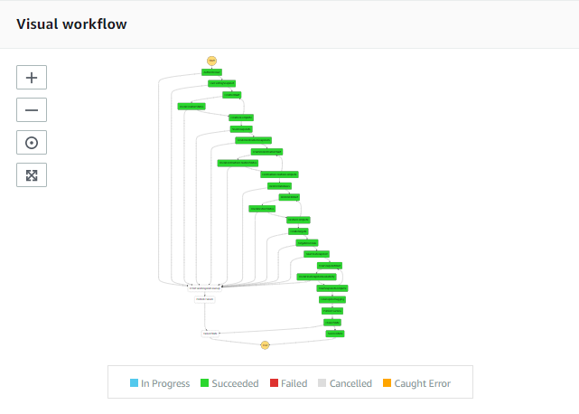

Quick Start¶
This quick start will help us get started with build, deployment and execution of Maskopy Step Function. The Step Function executes a series of lambda functions and runs a fargate task to obfuscate data.
Pre-requisites¶
This section lists the tools for local setup and AWS resources that are needed for Maskopy to run.
Local Environment¶
Need below tools in the local to build lambda functions, connect to AWS accounts and build docker container for obfuscation.
- python3, pip, zip
- aws cli
- docker
AWS Environment¶
Maskopy requires a minimum of two AWS accounts.
-
Source Account : This account hosts the RDS instance within a vpc and subnet which needs to be masked and copied to other accounts. Take a note of vpc-id and subnet-ids. These will be required to provide as inputs when creating resources in this AWS account. IAM Roles : Follow the steps documented in Setup in Source account and create IAM roles in source account.
-
Staging Account : This account is where the lambdas and step function are deployed and executed from. The final snapshot gets created in this account. This account needs to have a vpc, public and private subnets, route tables for internet access and s3 bucket to stage lambda code. Just like from the source account, take a note of AWS 12-digit account number, vpc-id, subnet-ids and s3 bucket name. These will be needed to provide as input to create resources in the AWS account. IAM Roles : Follow the steps documented in Setup in Staging account and create IAM roles in staging account.
Current version of Maskopy treats the staging account as destination account where the final snapshot is copied. Future versions will be able to obfuscate once in the staging account and copy to multiple destination accounts.
Create Resources in AWS¶
After all the above pre-requisites are completed, we will create the following resources in source and staging AWS accounts.
- KMS Keys
- Security groups
- ECR
- SQS Queue
- Deploy Maskopy Lambda and Step functions
Follow the steps in AWS Setup to create these resources.
Execution¶
After the AWS setup is completed, Maskopy Step function is ready to be executed which will obfuscate data and copy the snapshot.
Step 1 : Export AWS credentials¶
Export AWS_ACCESS_KEY_ID and AWS_SECRET_ACCESS_KEY from staging account and run in a terminal.
Note: If you are using an IAM user to run this setup, then you need to do the following:
- Add trust relationship from your IAM user to the Maskopy Execution role.
- Run assumeRole to assume the role of the Maskopy Execution role by running below.
STS_OUTPUT=$(aws sts assume-role --role-arn ${EXECUTION_ROLE_ARN} --role-session-name Maskopy --output text | sed -n '2 p') export AWS_ACCESS_KEY_ID=$(echo "${STS_OUTPUT}" | cut -f2) export AWS_SECRET_ACCESS_KEY=$(echo "${STS_OUTPUT}" | cut -f4) export AWS_SESSION_TOKEN=$(echo "${STS_OUTPUT}" | cut -f5) export AWS_SECURITY_TOKEN=$(echo "${STS_OUTPUT}" | cut -f5)
Step 2 : Provide Input¶
Input to Maskopy is provided through environment variables. Below are the list of input that is required to run Maskopy. Refer to the description and examples of all the variables in the table below.
| Env Variable | Description | Example |
|---|---|---|
| APPLICATION_NAME | Name of the application running Maskopy. The name must be part of IAM user/role name executing the step function. |
MASKOPY |
| COST_CENTER | All the temporary resources are tagged with the code. | abc123 |
| DESTINATION_ENV | SDLC environment name | dev |
| OBFUSCATION_SCRIPT_PATH | Location of bootstrap.sh in S3 bucket | my-obfuscation-bucket-name/obfuscation |
| RDS_OPTION_GROUP | Optional parameter |
|
| RDS_PARAMETER_GROUP | Optional parameter |
|
| RDS_SNAPSHOT_IDENTIFIER | This is the rds snapshot id in the source account. Must be tagged with key:ApplicationName and Value: <APPLICATION_NAME>. |
rds:myapp-ora-maskopy-test-1-2019-11-25-06-12 |
| STEP_FN_ARN | Arn of the step function to execute. | arn:aws:states:us-east-1:123456789012:stateMachine:MASKOPY-CLIENT-StateMachine |
Export the following environment variables into the shell.
export APPLICATION_NAME="<APP_NAME>" export COST_CENTER="<COST_CENTER_FOR_BILLING>" export DESTINATION_ENV="<TARGET_ENV>" export OBFUSCATION_SCRIPT_PATH="<S3_BUCKET_NAME>/obfuscation>" export RDS_OPTION_GROUP="<RDS_OPTION_GROUP_NAME-OPTIONAL>" export RDS_PARAMETER_GROUP="<RDS_PARAMETER_GROUP_NAME-OPTIONAL>" export RDS_SNAPSHOT_IDENTIFIER="<DB_SNAPSHOT_NAME_IN_SOURCE_ACCOUNT>" export STEP_FN_ARN="arn:aws:states:<AWS_REGION>:<STAGING_ACCOUNT_ID>:stateMachine:MASKOPY-CLIENT-StateMachine"
Step 3 : Run Maskopy¶
This script starts the execution of Maskopy Step Function.
./maskopy.sh
Below is a visualization of successful implementation of the state machine. 
{kind=link}